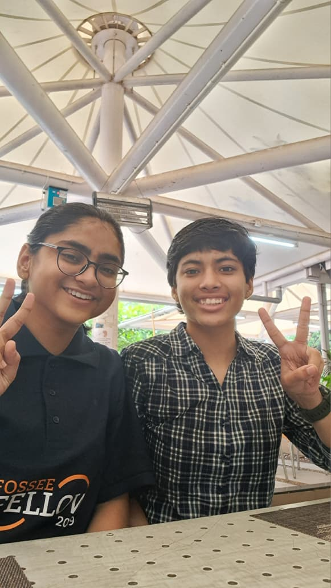
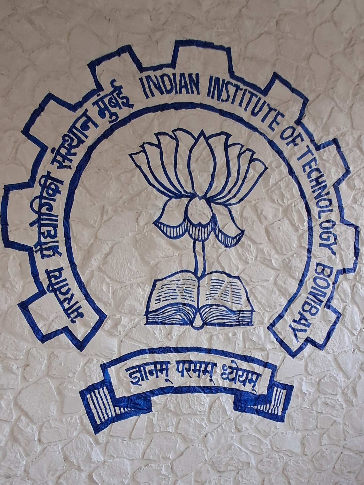
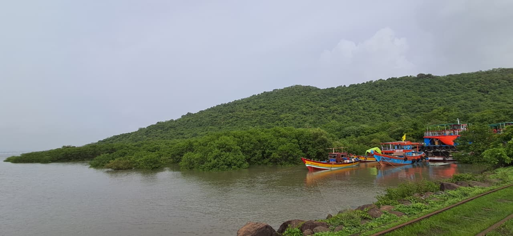
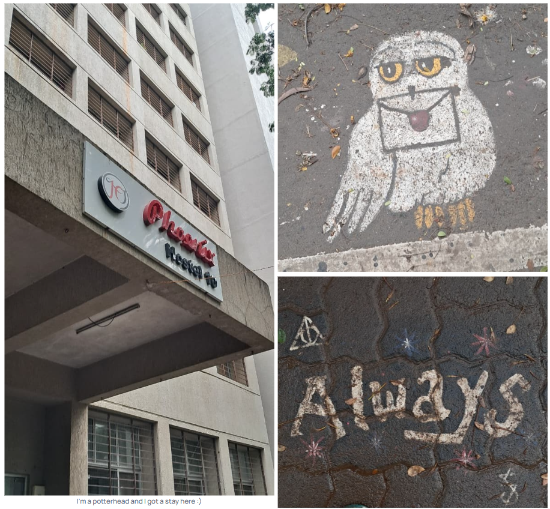
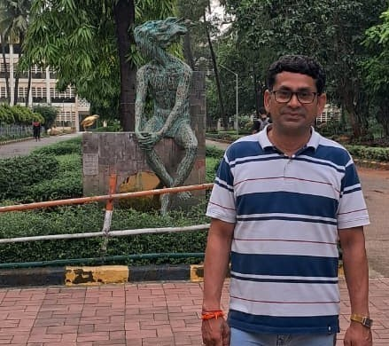
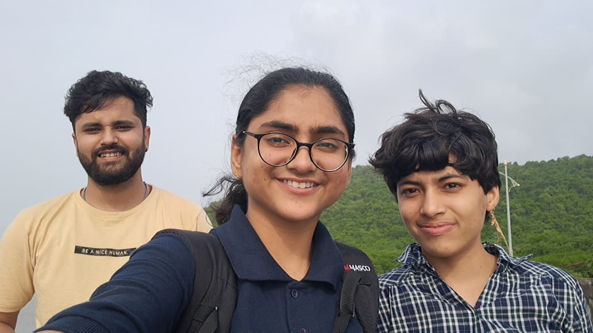
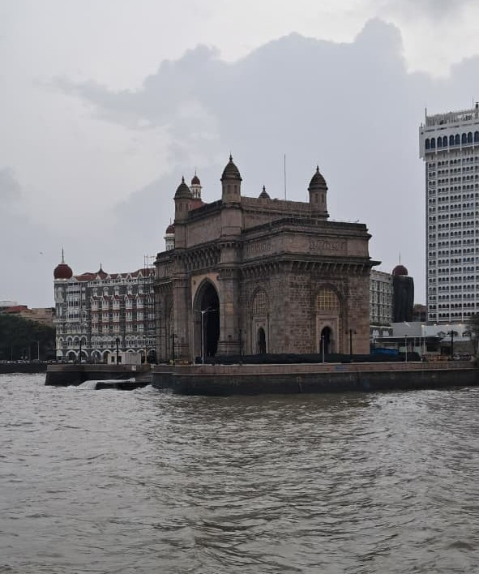

FOSSEE Summer Fellowship, 2024

Process of securing the internship
I applied through the FOSSEE Internship portal which started accepting summer applications around March and April that year. Many open-source software are available to work on including eSim, Scilab, OpenFOAM, Osdag, etc. Out of all the projects that were offered in 2024, Scilab appeared interesting to me even though I had no experience in it. This wasn’t a big problem because you have to complete a screening task based on which they shortlist. While working on the task you may go through yt videos/ spoken tutorials of FOSSEE for a better understanding.
What did I do?
I worked on Scilab Case Studies and used Xcos and CelestLab toolbox too. As and when a case study used to reach standard quality, it was published on scilab.in . The first one dealt with element identification, another with satellites in VLEO, and the third with simulating pitch of an aircraft. At the end of the internship we presented our work in front of professors, FOSSEE team and other interns. Student Reports, 2024
How was it like working there?
Pretty cool! especially as it was my first ever experience as an intern.
I was the only one on Scilab at that time while everyone else worked on other tools, so I couldn’t do any technical group discussions like them. But my mentor, Ms. Rashmi Patankar, frequently helped me and I could discuss very basic doubts also. This was huge for me as I was only a first-year student. There’s also an option to just roam about and ask others what they’re building, this kind of learning is also fun. People come from across India (and Nepal too) with different backgrounds and diverse ways of thinking.

My project demanded a lot of reading through research papers for case studies and the workload was a bit heavy in the middle stretch. So I'd take breaks wandering around IIT Bombay or sit in the library with whatever book caught my eye. And there’s this coding part, sweet and sour. But such is the case with any kind of programming, simulations and modelling a physical scenario is rarely a smooth process. When it does work out, you’ve definitely learnt more compared to just reading a research paper. The work culture is very flexible and friendly, best part is that you get to work on OSS which is used by a lot of people across the world.

This and that
We explored Mumbai, and to top it all off, India won the ICC T20 World Cup while we were there!! But our return journey was just a few days before Team India's big welcome back :(
Notwithstanding, the overall experience was really wholesome.



